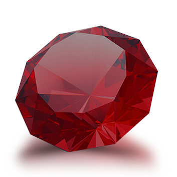

<!DOCTYPE html>
<html lang="en">
<head>
    <meta charset="UTF-8">
    <meta name="viewport" content="width=device-width, initial-scale=1.0">
    <meta http-equiv="X-UA-Compatible" content="ie=edge">
    <title>CrystalsCollector Game</title>
    <link rel="stylesheet" href="https://stackpath.bootstrapcdn.com/bootstrap/4.3.1/css/bootstrap.min.css" integrity="sha384-ggOyR0iXCbMQv3Xipma34MD+dH/1fQ784/j6cY/iJTQUOhcWr7x9JvoRxT2MZw1T"
     crossorigin="anonymous">
     <script
     src="https://code.jquery.com/jquery-3.4.1.min.js"
     integrity="sha256-CSXorXvZcTkaix6Yvo6HppcZGetbYMGWSFlBw8HfCJo="
     crossorigin="anonymous"></script>
     <link rel="stylesheet" href="../assets/css/style.css" type="text/css">
     <link rel="stylesheet" href="../assets/css/reset.css">
</head>

<!-- 
- a game with 4 crystal and Random Result
- Every crystal needs to have a random number between 1-12
- When clicking any CRYSTAL, It should adding with the previous result until it equals the total score
- If it is greater than the Random result, we decrement a lost counter 
- If it is equal, then we increment a win counter
- A new random number should be generated every single time we win or lost to those 4 crystals 
-->
<body>

    <p id="result"></p>
    <div class="crystals"></div>
    <!--  -->
    <p id="previous"></p>
   <p id="win"></p>
   <p id="lost"></p>
    <script src="../assets/javascript/game.js" type="text/javascript" ></script>
</body>
</html>